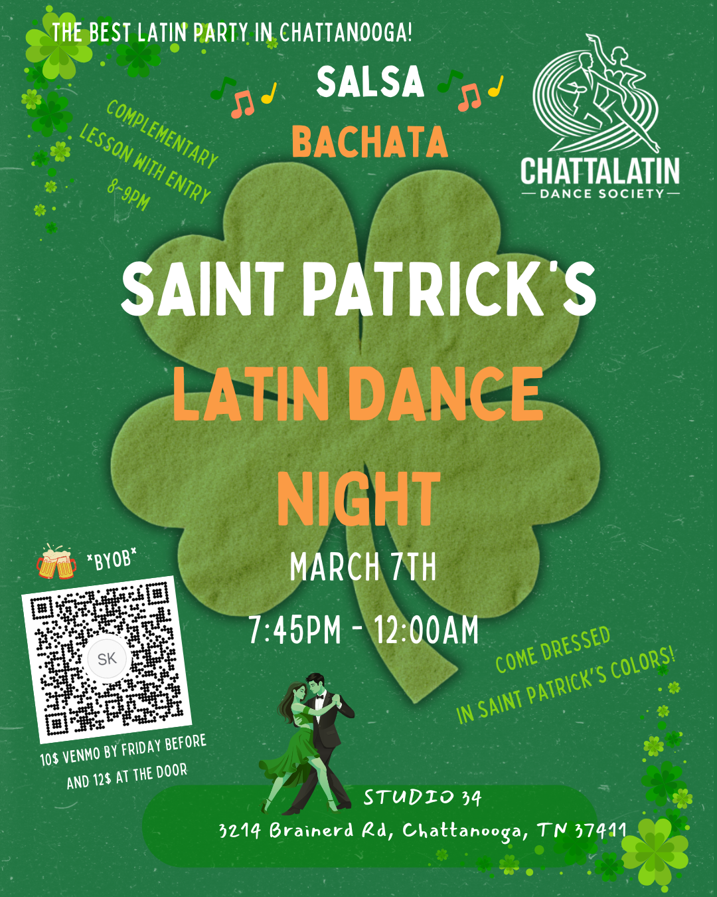
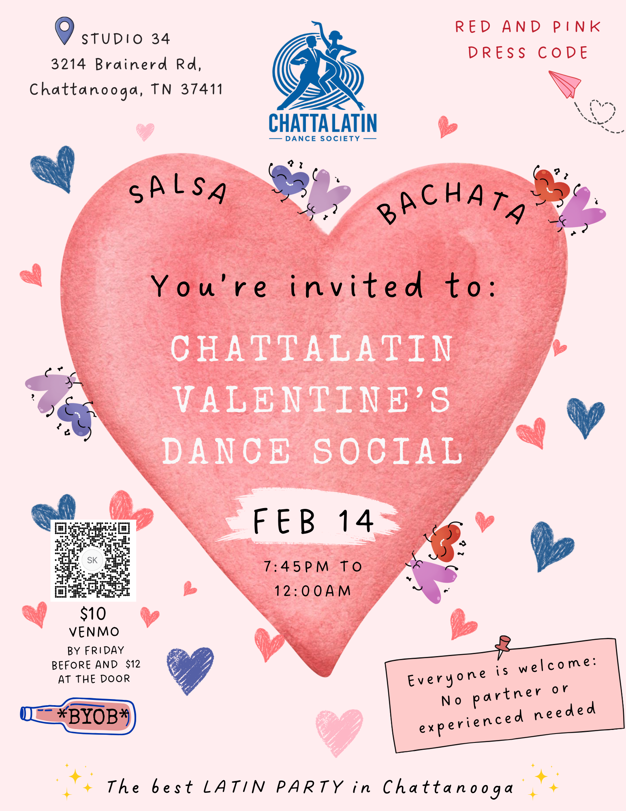
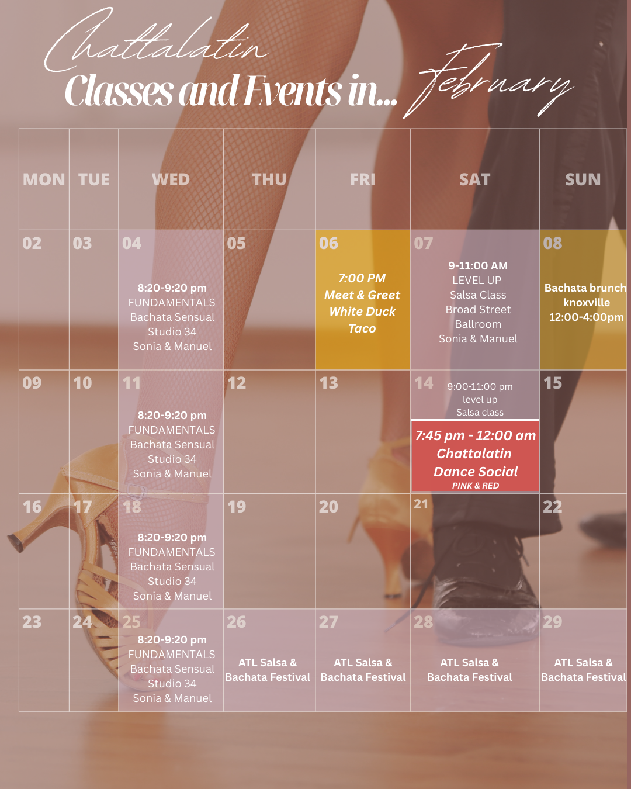
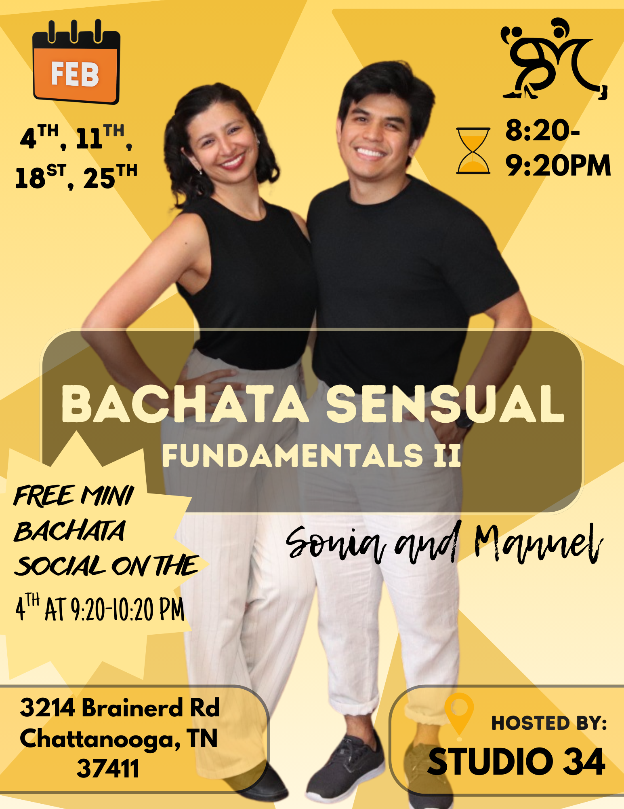

ChattaLatin Salsa & Bachata Event Calendar
Chattanooga, TN
March Social Dance
🍀💃 ST. PATRICK’S DAY SALSA & BACHATA SOCIAL — MARCH 7 🕺🍀
Get ready for a LUCKY night on the dance floor at our ChattaLatin
Salsa & Bachata Social in Chattanooga, Tennessee! Join us as we
celebrate St. Patrick’s Day with a fun, welcoming night of Latin
dancing. 🌈✨
Wear your best green, bring the energy, and enjoy an evening filled
with salsa, bachata, great music, and an amazing local dance community
🍀🔥
📍 Studio34 | Chattanooga, TN
🪩 Complimentary Beginner Lesson: 8–9 PM (no partner needed!)
🎶 Social Dancing: 9 PM – 12 AM
💰 $10 if you Venmo before | $12 at the door
Beginners welcome. No partner required. All experience levels
invited.
Come meet new people, learn new moves, and experience one of
Chattanooga’s most welcoming Latin dance socials 💚✨
We can’t wait to dance with you — let’s bring the luck, laughter, and
dance floor energy together! 🍀💃

February Social Dance
❤️💃 VALENTINE’S DAY LATIN SOCIAL — FEB 14 🕺❤️
Whether you’re coming with a date, your friends, or solo — everyone is
welcome on this dance floor!
📍 Studio 34 | Chattanooga
🕖 Doors open: 7:45 PM
🪩 Lesson: 8–9 PM (no partner needed!)
🎶 Social dancing: 9 PM – 12 AM
💕 Red & Pink Theme — dress festive and bring the Valentine’s vibes
💸 $10 pre-pay | $12 at the door
Come dance, laugh, and celebrate love in all its forms with salsa &
bachata heat all night long 🔥 Singles, couples, and everyone in
between — we can’t wait to dance with you! ❤️✨


BACHATA SENSUAL IS COMING TO CHATTANOOGA
🔥 You asked for it… and it’s finally here! 🔥 Bachata Sensual Fundamentals Part II is coming your way!
Wednesdays: 4th, 11th, 18th & 25th
⏰ 8:20 PM – 9:20 PM
📍Studio34 - 3214 Brainerd Rd, Chattanooga, TN 37411
This course focuses on Bachata Sensual fundamentals, technique, connection, and body movement—built step by step so you can truly grow and feel confident. No experience needed.
Click to sign up 🔗✨ Bonus: Join us for a FREE Bachata mini social on the 4th from 9:20 PM – 10:20 PM!

✨ SALSA LEVEL UP✨
We’re excited to keep the salsa journey going at Studio34! 💃🏾🕺🏻🔥 This 3-week progressive course is designed for dancers who have completed Step-Up Part 2 OR HAVE EQUIVALENT EXPERIENCE (have the basics down), and are ready to continue leveling up. We’ll build on previous material by adding more footwork, turn patterns, flow, and technique to help you feel smoother, more confident, and more musical on the dance floor.
🗓 Dates: January 17, 24 & 31
⏰ Time: 11:00 AM – 1:00 PM
📍 Location: Studio34
3214 Brainerd Rd, Chattanooga, TN 37411
⚠️ Spots are limited, so be sure to reserve yours soon!
To sign up: text or call: (423)933-0095

Future dates for social dance:
March 7th, 2026
March 28th, 2026
Join us on our Greet and Meet events
.png)
Next meet up- February 6th at 7:00pm.
Location: White Duck
Taco
1519 McCallie Ave, Chattanooga, TN 37404
Our Greet & Meet events are a casual way to connect with the Chattanooga Latin dance community. Come hang out, enjoy good company, and make new friends before hitting the dance floor at socials. 💃🕺 It’s not a class—just a space to share laughs, talk, and build community. Everyone’s welcome, whether you dance or not! 👉 Plus, it’s the perfect ice breaker before the social the following week—you’ll already know familiar faces when you step onto the dance floor.